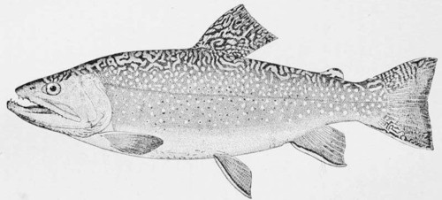

The Brook Trout
Description
This section is from the book "American Game Fishes", by W. A. Perry. Also available from Amazon: American Game Fishes: Their Habits, Habitat, and Peculiarities; How, When, and Where to Angle for Them.
The Brook Trout
The Spotted Brook Trout, Salvelinus fontinalis, is one of the most beautiful fishes in existence. It belongs to the division of the Salmon family known to the English as "Chars," a group confined for the most part to fresh-water brooks and streams, and, according to Professor Goode, distinguished from the true Salmons by a peculiar arrangement of teeth on the vomer, and also by their very small scales, and usually by numerous crimson or orange-colored spots, which are especially conspicuous in the breeding season. Its home is between latitudes 32⅜ degrees and 55 degrees, in the lakes and streams of the Atlantic water-shed, near the sources of a few rivers flowing into the Mississippi and the Gulf of Mexico, and in some of the southern affluents of Hudson Bay. Its range is limited by the southern foothills of the Alleghanies, and nowhere extends more than three hundred miles from the coast, except about the Great Lakes, in the northern tributaries of which Trout abound. At the south it inhabits the head-waters of the Chattahoochee, in the southern spurs of the Georgia Alleghanies, and tributaries of the Catawba in North Carolina. It also occurs in the Great Islands in the Gulf of St. Lawrence-Anticosti, Prince Edward, Cape Breton and Newfoundland.
The shape, size and coloration of the Speckled Trout vary much according to the conditions of food and water under which it exists. There are waters in which it is so nearly black as often, except upon close examination, to be mistaken for the chub, or other fish. In some waters, as for example those of the tributaries of Torch Lake, in Michigan, the Trout which were planted some years ago, still retain to some extent their distinctive characteristics of shape and color, and may often be distinguished from the native Trout. The following extracts are from "Goode's American fishes."
"When Trout have no access to the sea, they still contrive to avoid a change of temperature with the seasons. In midsummer they lie in the bottoms of the lakes cooled by springs, in the channels of streams, or in deep pools, lurking behind rocks and among roots. In spring and early summer they feed industriously among the rapids. At the approach of cold weather in the autumn they hasten to the clear shallow water near the heads of the streamlets. It is at this time that they deposit their eggs in little nests in the gravel, which the mother-fish have shaped with careful industry, fanning out the finer particles with their tails, and carrying the large ones in their mouths. After the eggs are laid, the parent fish covers them with gravel, and proceeds to excavate another nest. The same nests are said to be revisited by the schools year after year.
"The spawning season begins in New England in October, continuing from three to six months, and during this period the fish should be protected by stringent laws. Mr. Livingston Stone observed that in his ponds at Charleston, N. H., spawning began October 12th, and ended early in December; at Seth Green's establishment near Rochester, N. Y., it began on the same day and continued until March. At the former station spring water, with a uniform temperature of 47 degrees, was in use, while at Caledonia the eggs were kept in brook water, which is colder in mid-winter, retarding development."
There seems to be some uncertainty regarding the duration of the spawning season. In Northern Michigan I have taken
Brook Trout. Salvelinus FonthuUis.
Trout containing well developed spawn, in each of the summer months. Such cases are not infrequent, and I believe that similar observations have elsewhere been made.
Trout are cold water fishes, and according to Green, cannot thrive in water warmer than 68 degrees Fahr. They are at their best at the approach of winter. They rarely exceed two or three pounds in weight, except in a few favored localities. I remember long ago an offer of P. T. Barnum of a prize for a four-pound Spotted Trout, but none was forthcoming. In the Rangeley Lakes they have been taken weighing eleven pounds or more. One taken in 1867, in Rangeley Lake, weighed ten pounds after three days captivity, and was thought by experts to have lost a pound and a half in transit from Maine to New Jersey, where it died. Its length was thirty inches, and its circumference eighteen.
"The Nipigon River claims still heavier fish. Hallock mentions one said to have weighed seventeen pounds."
According to Agassiz, these large Trout may have reached the age of one or two hundred years. "The rate of growth is determined by the amount of food consumed. Some two-year-old fish weigh a pound, some half an ounce, as Mr. Stone's experience shows."
Endless are the dissertations which have been written in praise of the Speckled Trout and its pursuit "with the angle," but no one has as yet succeeded in so portraying this sport and its objects as fully to equal the remembrances which live ever in the memory of an old and successful Trout-fisher. For him there is no sport like Trout-fishing, and though seduced perhaps from time to time by the lordly Salmon, the silvery Tarpon, or other of our notable game-fishes north or south, he ever returns with renewed zest to the pine-shadowed lake or brawling mountain stream-the scenes of earlier triumphs; and as he sees the bright hues of a ten-inch Trout gleaming through the meshes of his landing net, he once more says, as often in the past: "Well, there's nothing like Trout-fishing after all."
Should and doubt that the Speckled Trout is fully entitled to distinction as emphatically a gentleman among fishes, the following quotation from Mr. James W. Miller should forever set the question at rest:
"His whole wooing is the most polite attention and the gentlest of persuasions. He moves continually to and fro before his mate, parading his bright colors, while she rests quietly, with her head up stream, vibrating her fins just sufficiently to keep her from floating down. At Waterville, Wisconsin, I had the opportunity of watching their habits.
Continue to: